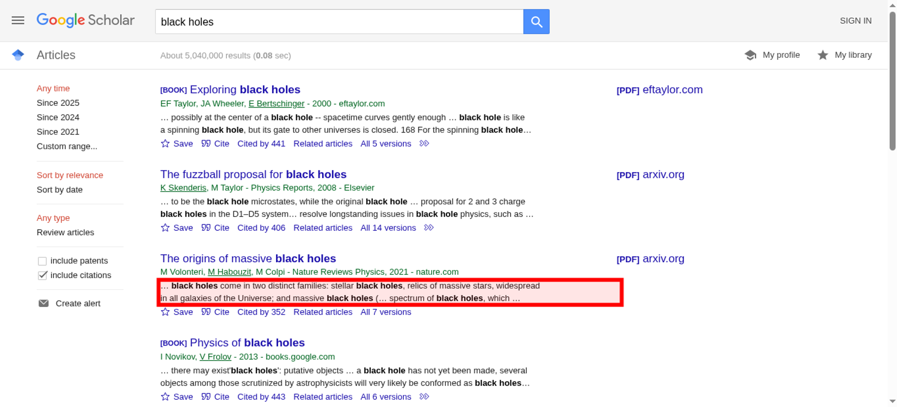
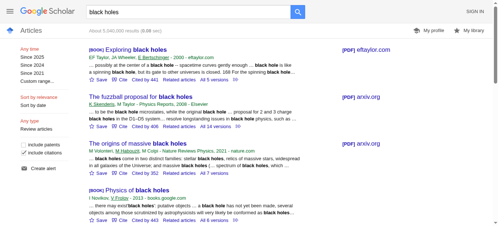

Tested 2025-11-15 02:28:00 using Chrome 141.0.7390.107 (runtime settings).
| Metric | Value |
|---|---|
| Page metrics | |
| Performance Score | 100 |
| Total Page Transfer Size | 62.3 KB |
| Requests | 4 |
| Timing metrics | |
| TTFB [median] | 172 ms |
| First Paint [median] | 212 ms |
| Fully Loaded [median] | 276 ms |
| Google Web Vitals | |
| TTFB [median] | 172 ms |
| First Contentful Paint (FCP) [median] | 212 ms |
| Largest Contentful Paint (LCP) [median] | 272 ms |
| Cumulative Layout Shift (CLS) [median] | 0.00 |
| Visual Metrics | |
| First Visual Change [median] | 233 ms |
| Speed Index [median] | 254 ms |
| Visual Complete 85% [median] | 266 ms |
| Visual Complete 99% [median] | 266 ms |
| Last Visual Change [median] | 266 ms |

| Metric | min | median | mean | max |
|---|---|---|---|---|
| Visual Metrics | ||||
| FirstVisualChange | 200 ms | 233 ms | 222 ms | 234 ms |
| LastVisualChange | 266 ms | 266 ms | 278 ms | 301 ms |
| SpeedIndex | 244 ms | 254 ms | 259 ms | 279 ms |
| VisualReadiness | 33 ms | 66 ms | 55 ms | 67 ms |
| VisualComplete85 | 266 ms | 266 ms | 278 ms | 301 ms |
| VisualComplete95 | 266 ms | 266 ms | 278 ms | 301 ms |
| VisualComplete99 | 266 ms | 266 ms | 278 ms | 301 ms |
| Google Web Vitals | ||||
| Time To First Byte (TTFB) | 165 ms | 172 ms | 171 ms | 177 ms |
| Largest Contentful Paint (LCP) | 264 ms | 272 ms | 275 ms | 288 ms |
| First Contentful Paint (FCP) | 212 ms | 212 ms | 217 ms | 228 ms |
| Cumulative Layout Shift (CLS) | 0.0001 | 0.0001 | 0.0001 | 0.0001 |
| More metrics | ||||
| firstPaint | 212 ms | 212 ms | 217 ms | 228 ms |
| loadEventEnd | 249 ms | 258 ms | 258 ms | 268 ms |
| CPU | ||||
| Total Blocking Time | 0 ms | 0 ms | 0 ms | 0 ms |
| Max Potential FID | 0 ms | 0 ms | 0 ms | 0 ms |
| CPU long tasks | 0 | 0 | 0 | 0 |
| CPU last long task happens at | 0 ms | 0 ms | 0 ms | 0 ms |
Run 2 SpeedIndex median
Choose HAR:
Use--filmstrip.showAll to show all filmstrips.
The coach helps you find performance problems on your web page using web performance best practice rules. And gives you advice on privacy and best practices. Tested using Coach-core version 8.1.3.

You have a perfect Performance score!
| Title | Advice | Score |
|---|---|---|
| Declare the language code for your document (language) | The page is missing a language definition in the HTML tag. Define it with <html lang="YOUR_LANGUAGE_CODE"> | 0 |
| Description: According to the W3C recommendation you should declare the primary language for each Web page with the lang attribute inside the <html> tag https://www.w3.org/International/questions/qa-html-language-declarations#basics. | ||
| Meta description (metaDescription) | The page is missing a meta description. | 0 |
| Description: Use a page description to make the page more relevant to search engines. | ||
| Have a good URL format (url) | The page is using more than two request parameters. You should really rethink and try to minimize the number of parameters. | 50 |
| Description: A clean URL is good for the user and for SEO. Make them human readable, avoid too long URLs, spaces in the URL, too many request parameters, and never ever have the session id in your URL. | ||
| Avoid unnecessary headers (unnecessaryHeaders) | There are 1 response that sets a p3p header. There are 4 responses that sets both a max-age and expires header. There are 4 responses that sets a server header. | 91 |
| Description: Do not send headers that you don't need. We look for p3p, cache-control and max-age, pragma, server and x-frame-options headers. Have a look at Andrew Betts - Headers for Hackers talk as a guide https://www.youtube.com/watch?v=k92ZbrY815c or read https://www.fastly.com/blog/headers-we-dont-want. | ||
| Offenders: | ||
| Title | Advice | Score |
|---|---|---|
| Avoid using surveillance web sites (surveillance) | scholar.google.com harvest user information and sell it to other companies without the users agreement. That is not OK. | 0 |
| Description: Do not use web sites that harvest private user information and sell it to other companies. See https://en.wikipedia.org/wiki/Surveillance_capitalism | ||
| Offenders: | ||
| Use a good Content-Security-Policy header to make sure you you avoid Cross Site Scripting (XSS) attacks. (contentSecurityPolicyHeader) | Set a Content-Security-Policy header to make sure you are not open for Cross Site Scripting (XSS) attacks. You can start with setting a Content-Security-Policy-Report-Only header, that will only report the violation, not stop the download. | 0 |
| Description: Content Security Policy is delivered via a HTTP response header, and defines approved sources of content that the browser may load. It can be an effective countermeasure to Cross Site Scripting (XSS) attacks and is also widely supported and usually easily deployed. https://scotthelme.co.uk/content-security-policy-an-introduction/. | ||
| Offenders: | ||
| Set a referrer-policy header to make sure you do not leak user information. (referrerPolicyHeader) | Set a referrer-policy header to make sure you do not leak user information. | 0 |
| Description: Referrer Policy is a new header that allows a site to control how much information the browser includes with navigations away from a document and should be set by all sites. https://scotthelme.co.uk/a-new-security-header-referrer-policy/. | ||
| Offenders: | ||
| Page info | |
|---|---|
| Title | black holes - Google Scholar |
| Width | 1350 |
| Height | 1713 |
| DOM elements | 826 |
| Avg DOM depth | 10 |
| Max DOM depth | 15 |
| Iframes | 0 |
| Script tags | 1 |
| Local storage | 65 B |
| Session storage | 46 B |
| Network Information API | 4g |
Data collected using Wappalyzer version 6.10.54. With updated code from Webappanalyzer 2024-12-27. Use --browsertime.firefox.includeResponseBodies htmlor --browsertime.chrome.includeResponseBodies htmlto help Wappalyzer find more information about technologies used.
| Technology | Confidence | Category |
|---|---|---|
| HTTP/3 | 100 | Miscellaneous |
Data from run 2
| Visual Metrics | |
|---|---|
| First Visual Change | 233 ms |
| Speed Index | 254 ms |
| Visual Complete 85% | 266 ms |
| Visual Complete 95% | 266 ms |
| Visual Complete 99% | 266 ms |
| Last Visual Change | 266 ms |
| Visual Readiness | 33 ms |
| Navigation Timing | |
|---|---|
| backEndTime | 172 ms |
| domContentLoadedTime | 250 ms |
| domInteractiveTime | 250 ms |
| domainLookupTime | 0 ms |
| frontEndTime | 11 ms |
| pageDownloadTime | 75 ms |
| pageLoadTime | 258 ms |
| redirectionTime | 0 ms |
| serverConnectionTime | 0 ms |
| serverResponseTime | 186 ms |
| Google Web Vitals | |
|---|---|
| Time to first byte (TTFB) | 172 ms |
| First Contentful Paint (FCP) | 212 ms |
| Largest Contentful Paint (LCP) | 272 ms |
| Cumulative Layout Shift (CLS) | 0.00 |
| Total Blocking Time (TBT) | 0 ms |
| Extra timings | |
|---|---|
| TTFB | 172 ms |
| First Paint | 212 ms |
| Load Event End | 258 ms |
| Fully loaded | 276 ms |
When in time the page main content is rendered (collected using the Largest Contentful Paint API). Read more about Largest Contentful Paint.
| Element type | DIV |
| Element/tag | <div class="gs_rs"></div> |
| Render time | 272 ms |
| Element render delay | 100 ms |
| TTFB | 172 ms |
| Resource delay | 0 ms |
| Resource load duration | 0 ms |
| Load time | 0 ms |
| Size (width*height) | 19652 |
| DOM path | |
| div#gs_top > div#gs_bdy > div#gs_bdy_ccl > div#gs_res_ccl > div#gs_res_ccl_mid > div:eq(2) > div:eq(1) > div:eq(1)> div#gs_top > div#gs_bdy > div#gs_bdy_ccl > div#gs_res_ccl > div#gs_res_ccl_mid > div:eq(2) > div:eq(1) > div:eq(1)> | |

The largest contentful paint is highlighted in the image. If no element is highlighted the element was removed before the screenshot or the LCP API couldn't find the element.
0.00008 cumulative layout shift collected from the Cumulative Layout Shift API.
These HTML elements contribute most to the Cumulative Layout Shifts of the page. The higher score, the more layout shift.
| Score | HTML Element |
|---|---|
| 0.00008 | <div id="gs_hdr_act"></div> |
| body > div#gs_top > div#gs_hdr > div#gs_hdr_act | |

The elements that have shifted place is highlighted in the image (that have a higher value than 0.01). If the element shifted outside of the viewport, you will not see it there. It can be hard to understand what content that has shifted, if that's the case, checkout the video or the filmstrip of the run.
Read more about the Long Animation Frames API here here.
The top 10 longest animation frames entries
There are no Server Timings.
There are no custom configured scripts.
There are no custom extra metrics from scripting.
How the page is built.
| Summary | |
|---|---|
| HTTP version | HTTP/2.0 |
| Total requests | 4 |
| Total domains | 1 |
| Total transfer size | 62.3 KB |
| Total content size | 180.6 KB |
| Responses missing compression | 1 |
| Number of cookies | 1 |
| Third party cookies | 0 |
| Requests per response code | |
|---|---|
| 200 | 4 |
| URL | Type | Transfer Size | Content Size |
|---|---|---|---|
| https://scholar.goog...oogle.com/scholar | html | 41.8 KB | 160.2 KB |
| https://scholar.goog...rite_20161020.png | image | 14.4 KB | 14.2 KB |
| https://scholar.google.com/favicon.ico | favicon | 3.8 KB | 3.8 KB |
| https://scholar.goog...lar_logo_24dp.png | image | 2.4 KB | 2.4 KB |
| Content | Header Size | Transfer Size | Content Size | Requests |
|---|---|---|---|---|
| html | 0 b | 41.8 KB | 160.2 KB | 1 |
| image | 0 b | 16.8 KB | 16.6 KB | 2 |
| favicon | 0 b | 3.8 KB | 3.8 KB | 1 |
| Total | 0 b | 62.3 KB | 180.6 KB | 4 |
| Domain | Total download time | Transfer Size | Content Size | Requests |
|---|---|---|---|---|
| scholar.google.com | 265 ms | 62.3 KB | 180.6 KB | 4 |
| type | min | median | max |
|---|---|---|---|
| Expires | 0 seconds | 1 day | 1 day |
Included requests done after load event end.
| Content | Transfer Size | Requests |
|---|---|---|
| html | 0 b | 0 |
| css | 0 b | 0 |
| javascript | 0 b | 0 |
| image | 0 b | 0 |
| font | 0 b | 0 |
| favicon | 3.8 KB | 1 |
| Total | 3.8 KB | 1 |
Includes requests done after DOM content loaded.
| Content | Transfer Size | Requests |
|---|---|---|
| html | 0 b | 0 |
| css | 0 b | 0 |
| javascript | 0 b | 0 |
| image | 0 b | 0 |
| font | 0 b | 0 |
| favicon | 3.8 KB | 1 |
| Total | 3.8 KB | 1 |
Third party requests categorised by Third party web version 0.26.2.
Calculated using .*google.* (use --firstParty to configure).
| Content | Header Size | Transfer Size | Content Size | Requests |
|---|---|---|---|---|
| html | 0 b | 41.8 KB | 160.2 KB | 1 |
| css | 0 b | 0 b | 0 b | 0 |
| javascript | 0 b | 0 b | 0 b | 0 |
| image | 0 b | 16.8 KB | 16.6 KB | 2 |
| font | 0 b | 0 b | 0 b | 0 |
| favicon | 0 b | 3.8 KB | 3.8 KB | 1 |
| Total | N/A | 62.3 KB | 180.6 KB | 4 |
| Content | Header Size | Transfer Size | Content Size | Requests |
|---|---|---|---|---|
| html | 0 b | 0 b | 0 b | 0 |
| css | 0 b | 0 b | 0 b | 0 |
| javascript | 0 b | 0 b | 0 b | 0 |
| image | 0 b | 0 b | 0 b | 0 |
| font | 0 b | 0 b | 0 b | 0 |
| Total | N/A | N/A | N/A |

{kind=link}
{kind=link}
{kind=link}
{kind=link}
{kind=link}